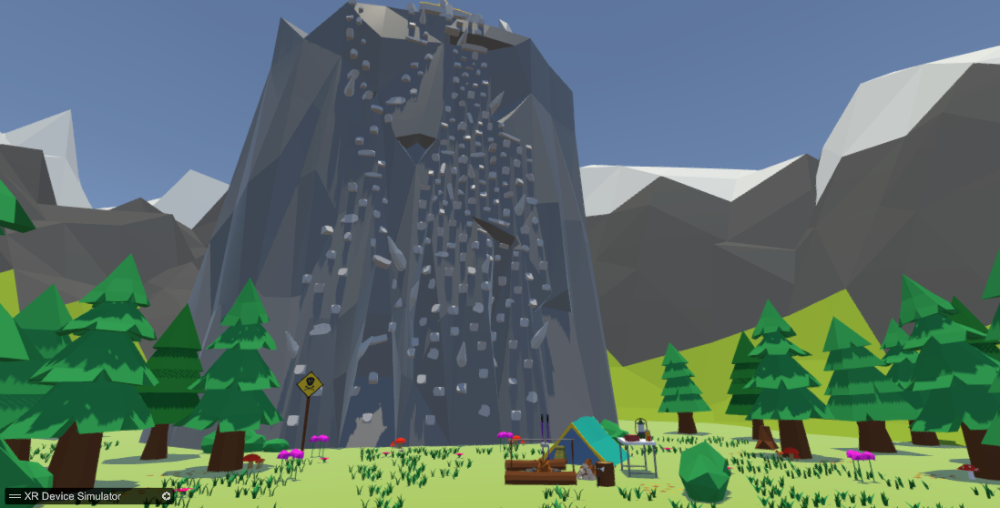

Abschlusspräsentation
Immersion, Präzision und Hochgeschwindigkeit in der Vertikalen
Team: Tim, Kürsat, Alex, Philipp
Jump & Run trifft auf naturnahes Extrem-Klettern
"Proof by Climbing" ist ein Movement-basiertes VR-Spiel, bei dem Spieler vertikale Kletterparcours in Bestzeit bewältigen. Der absolute Fokus liegt auf dem „Flow“ – der nahtlosen Verbindung von Greifen und Klettern in einer naturnahen Umgebung.
Primär Speedrunner, VR-Enthusiasten und kompetitive Spieler. Wir verzichten auf Standard-Mechaniken und konzentrieren uns zu 100% auf ein hochgradig poliertes Core-Movement ohne unnötige Ablenkungen.
Konzeption, GDD-Erstellung & Definition der Key-Features.
Implementierung des grundlegenden Movements & der Greif-Physik.
Gestaltung der naturnahen Level-Architektur & Flow-Optimierung.
Performance-Optimierung, Audio-Design & finale Auswertung.

Gameplay Showcase
In diesem finalen Gameplay-Ausschnitt zeigen wir das polierte Movement in der natürlichen Spielumgebung.
VIDEO PLATZHALTER
Um fundiertes Feedback zu sammeln, haben wir einen strukturierten Evaluationsbogen mit drei Hauptkategorien entwickelt:
Zeit für Fragen & Diskussion